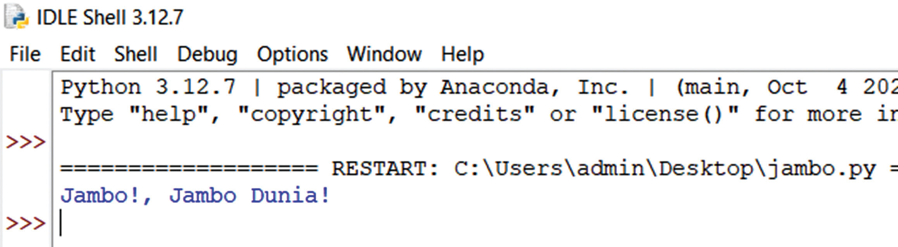

(c) Click on the jambo.py file to open it in IDLE.
Step 3: Run the Python Program:
(a) After opening the file, go to the “Run” menu at the top of the IDLE window.
(b) Click on “Run Module” (or simply press F5) to execute the program.
Step 4: View the Output:
The program will run, and you should see the output in the IDLE shell window. If your code is correct, the output will be displayed, as shown in Figure 5.4

Figure 5.4: A program output of the jambo.py program using IDLE
Exercise 5.1
1. What steps would you follow to download and install Python on your
computer? After installation, how can you confirm that Python is properly
set up on your system?
2. What is the purpose of using an IDE (Integrated Development Environment)
when programming in Python? How does Thonny IDE differ from other
popular IDEs like PyCharm or Visual Studio Code in terms of user-friendliness
and other aspects for beginners?
3. In Thonny IDE, write a Python program that prints your name and age. Save the program as myinfo.py. Describe the steps you took to write, save, and run the program.
4. After writing a Python program in Thonny IDE, how would you run it? What is the expected output if you create a program that prints “Jambo, ndugu!”?
5. Explain the differences between Python’s default development environment,
IDLE, and a more advanced Integrated Development Environment (IDE)
like Thonny and PyCharm. What are the strengths and weaknesses of each,
particularly for a beginner? Based on your understanding, which environment
would you recommend for someone just starting to learn Python, and why?